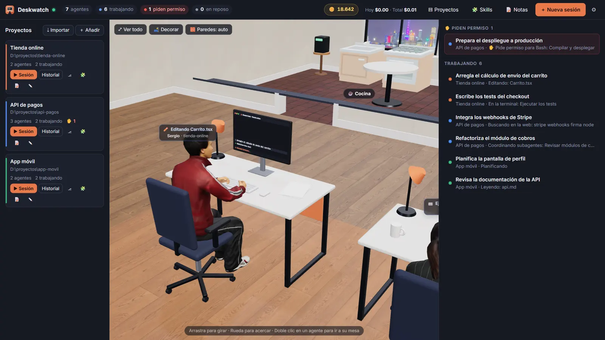
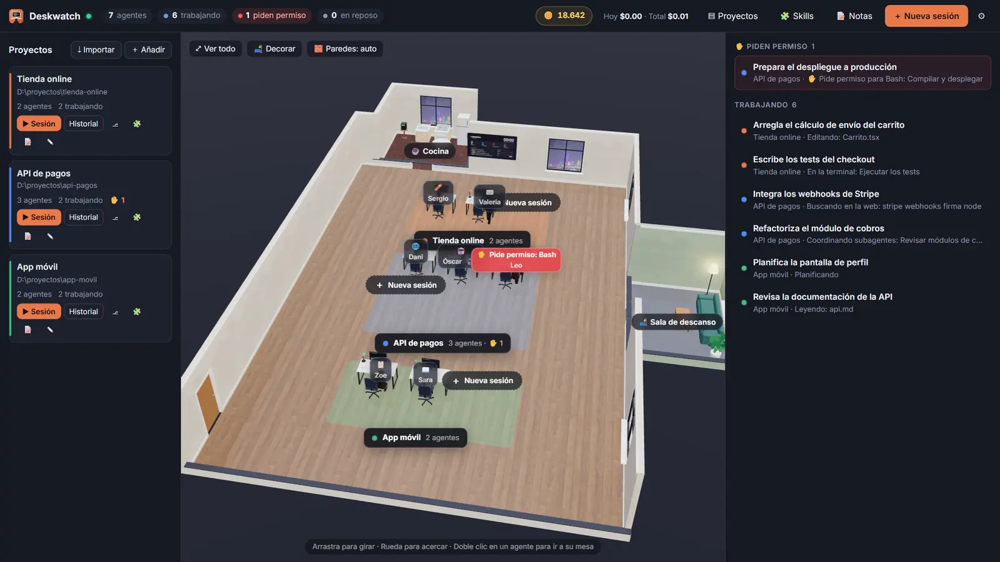
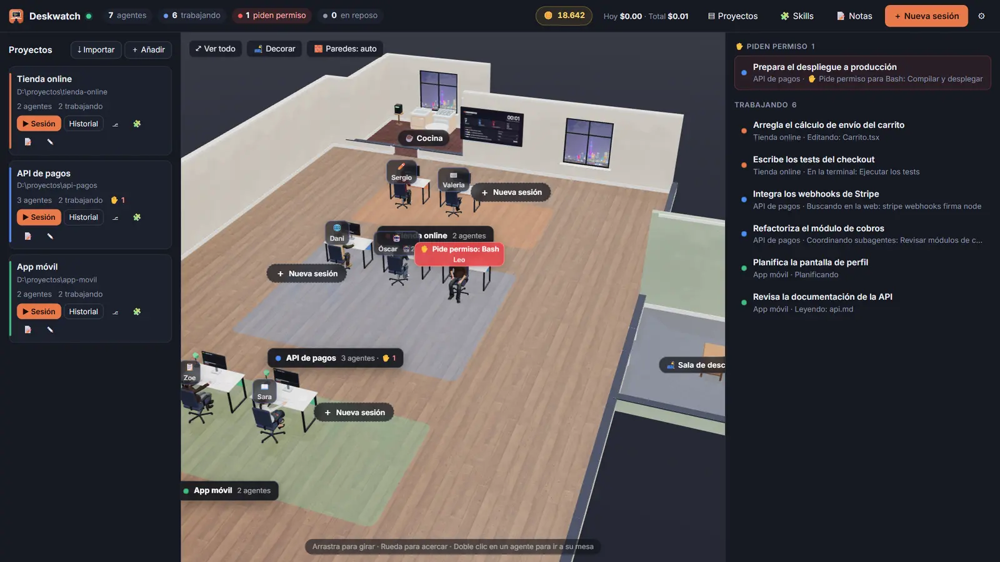
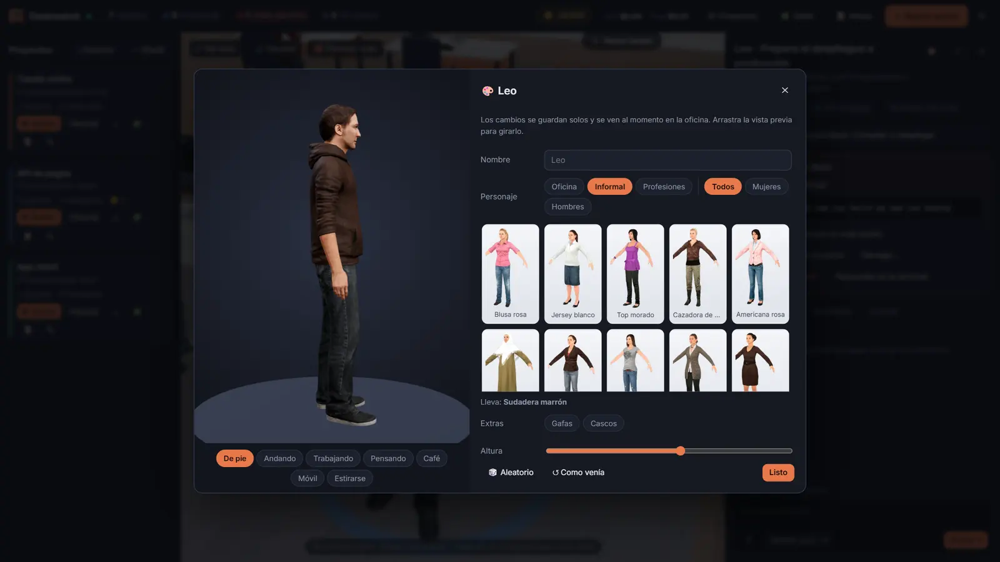
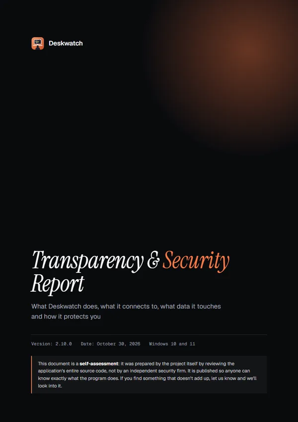

01
Every session gets a face
Agents type while they edit, read while they read, grab a coffee on a break and nod off when they're done. Their monitor streams the conversation live.

Deskwatch gives every Claude Code session a desk in a 3D office. See what each agent is doing, approve permissions, chat with them and keep an eye on usage — all from one window.
Windows 10/11 · updates itself

Video
Two and a half minutes inside the office: real Claude Code agents launching, asking for permission, fixing a test and pushing to GitHub.
Narrated in Spanish · subtitles available in the player
Music: “Floating Cities” by Kevin MacLeod (incompetech.com), CC BY 4.0 · TV clip: “Big Buck Bunny” © Blender Foundation, CC BY 3.0
Features
No more juggling terminals and VS Code windows. One look at the office tells you who's working, who's waiting on you and who's done.
Agents type while they edit, read while they read, grab a coffee on a break and nod off when they're done. Their monitor streams the conversation live.

When an agent needs permission, it turns its chair toward you and its red light comes on. Allow it, deny it or allow it for good — in one click.
Live streaming, Markdown, diffs, pasted images and PDFs, slash commands and skills — and your remaining context, always in view.
Build a bathroom, a kitchen, a meeting room or a break room. Pick furniture, floors and walls — your agents actually use them on their breaks.

Fully animated 3D characters that walk, sit and type. Choose who each agent is, then dress them up with glasses, headphones and their own height.

Track your plan's 5-hour and 7-day usage. Set a cap or a daily budget, and Deskwatch pauses every agent the moment you hit it.
Flip on remote for any session and pick it up from Claude on your phone or the web, without losing track of the office.
Paste a GitHub repo link, review what each skill contains and install only the ones you want — for every project or just one.
Open any project in a real VS Code-based editor: files, search, Git, debugger, terminal and Open VSX extensions. No VS Code needed, and no telemetry.
Screenshots
Click the image to view it full screen.
How it works
A Windows desktop app with Claude Code built in. It uses the Claude account you're already signed in to.
It finds the folders you already use with Claude Code and seats your latest conversations in the office. Terminal and VS Code sessions show up too.
Launch agents, wake up old conversations, answer permissions and watch usage. New versions install themselves.
FAQ
Windows 10 or 11 and a Claude account with access to Claude Code. Deskwatch ships with its own Claude Code, so you don't need VS Code or a terminal open.
It checks for a new version when it starts and every few hours, and lets you know. It downloads only when you accept, and installs when you restart.
Deskwatch runs locally and has no telemetry. What leaves your computer is what Claude Code already sends to Claude, the update check on GitHub and whatever you use yourself (GitHub, YouTube videos). Every detail is in the transparency report.
It adds no usage of its own — your agents are the same Claude Code sessions as always. And with usage brakes, you can set a hard cap so you never overshoot.
No. Deskwatch is an independent project that works with Claude Code. It isn't affiliated with or endorsed by Anthropic.
Windows only for now. Other platforms are on the wish list.
Transparency
We reviewed Deskwatch's entire source code and put it all in one document: what it connects to, what it reads and writes on your computer, how it handles your credentials, what we found and what we fixed.
Self-assessment by the project, version 2.10.0 · October 2026. It is not an independent audit.

Download it, open your projects and watch your agents get to work.
Download for WindowsWindows 10/11 · updates itself